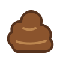

Les toilettes
Vous ouvrez la porte. Un monstre de caca géant sort de la cuvette, avec deux yeux de maïs et une odeur épouvantable. Sur son front, vous reconnaissez le symbole de SamirriteLesFesses.

Vous ouvrez la porte. Un monstre de caca géant sort de la cuvette, avec deux yeux de maïs et une odeur épouvantable. Sur son front, vous reconnaissez le symbole de SamirriteLesFesses.